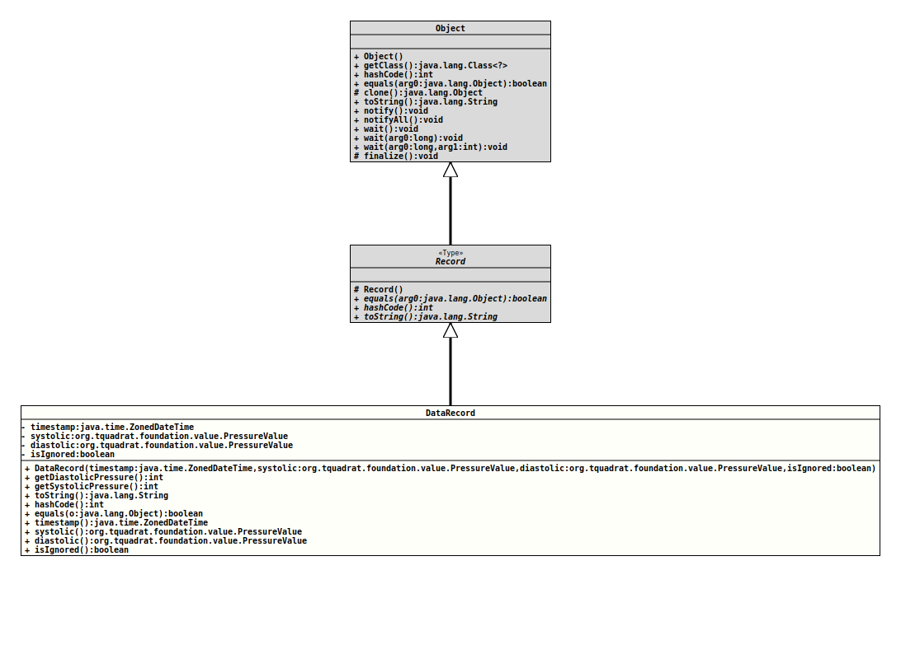

java.lang.Object
java.lang.Record
org.tquadrat.bloodpressure.DataRecord
- Record Components:
timestamp- The timestamp for the measuring.systolic- The systolic pressure value.diastolic- The diastolic pressure value.isIgnored-trueif the record should be ignored by any statistics.
@ClassVersion(sourceVersion="$Id: DataRecord.java 117 2022-02-10 13:13:07Z tquadrat $")
@API(status=STABLE,
since="0.0.1")
public record DataRecord(ZonedDateTime timestamp, org.tquadrat.foundation.value.PressureValue systolic, org.tquadrat.foundation.value.PressureValue diastolic, boolean isIgnored)
extends Record
A data record as it is produced by a
DataImporter.- Author:
- Thomas Thrien (thomas.thrien@tquadrat.org)
- Version:
- $Id: DataRecord.java 117 2022-02-10 13:13:07Z tquadrat $
- Since:
- 0.0.1
- UML Diagram
-

UML Diagram for "org.tquadrat.bloodpressure.DataRecord"
{kind=link}
-
Field Summary
FieldsModifier and TypeFieldDescriptionprivate final org.tquadrat.foundation.value.PressureValueThe field for thediastolicrecord component.private final booleanThe field for theisIgnoredrecord component.private final org.tquadrat.foundation.value.PressureValueThe field for thesystolicrecord component.private final ZonedDateTimeThe field for thetimestamprecord component. -
Constructor Summary
ConstructorsConstructorDescriptionDataRecord(ZonedDateTime timestamp, org.tquadrat.foundation.value.PressureValue systolic, org.tquadrat.foundation.value.PressureValue diastolic, boolean isIgnored) Creates a new instance forDataRecord. -
Method Summary
Modifier and TypeMethodDescriptionorg.tquadrat.foundation.value.PressureValueReturns the value of thediastolicrecord component.final booleanIndicates whether some other object is "equal to" this one.final intReturns the diastolic pressure as an integer value with the unit mmHG.final intReturns the systolic pressure as an integer value with the unit mmHG.final inthashCode()Returns a hash code value for this object.booleanReturns the value of theisIgnoredrecord component.org.tquadrat.foundation.value.PressureValuesystolic()Returns the value of thesystolicrecord component.Returns the value of thetimestamprecord component.final StringtoString()Returns a string representation of this record class.
-
Field Details
-
Constructor Details
-
DataRecord
public DataRecord(ZonedDateTime timestamp, org.tquadrat.foundation.value.PressureValue systolic, org.tquadrat.foundation.value.PressureValue diastolic, boolean isIgnored) Creates a new instance forDataRecord.- Parameters:
timestamp- The timestamp for the measuring.systolic- The systolic pressure value.diastolic- The diastolic pressure value.isIgnored-trueif the record should be ignored by any statistics.
-
-
Method Details
-
getDiastolicPressure
Returns the diastolic pressure as an integer value with the unit mmHG.- Returns:
- The diastolic pressure.
-
getSystolicPressure
Returns the systolic pressure as an integer value with the unit mmHG.- Returns:
- The systolic pressure.
-
toString
Returns a string representation of this record class. The representation contains the name of the class, followed by the name and value of each of the record components. -
hashCode
Returns a hash code value for this object. The value is derived from the hash code of each of the record components. -
equals
Indicates whether some other object is "equal to" this one. The objects are equal if the other object is of the same class and if all the record components are equal. Reference components are compared withObjects::equals(Object,Object); primitive components are compared with '=='. -
timestamp
Returns the value of thetimestamprecord component.- Returns:
- the value of the
timestamprecord component
-
systolic
Returns the value of thesystolicrecord component.- Returns:
- the value of the
systolicrecord component
-
diastolic
Returns the value of thediastolicrecord component.- Returns:
- the value of the
diastolicrecord component
-
isIgnored
Returns the value of theisIgnoredrecord component.- Returns:
- the value of the
isIgnoredrecord component
-